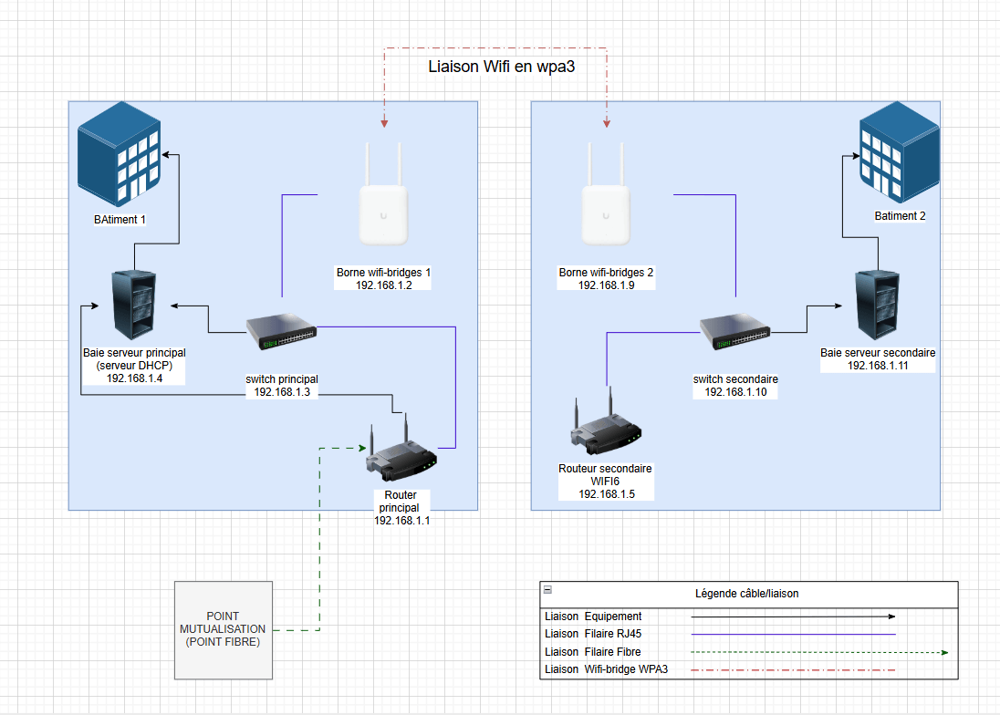

Projet BTS 01 · Réseau · BTS blanc
Déploiement d’un pont Wi-Fi point à point sécurisé en WPA3 avec des équipements TP-Link pour relier deux bâtiments distants.
WPA3Wi-Fi bridgeDHCPWindows Server 2022
détail →